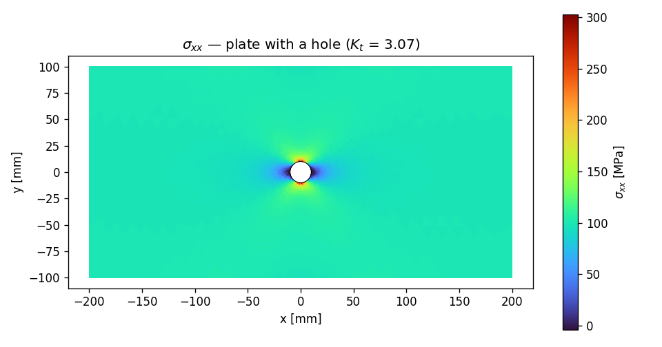

E6 — A CAD part from STEP: the plate with a hole¶
Every model so far began with points and lines drawn in code. Real projects rarely do — the geometry arrives as a CAD file, a STEP or IGES part someone exported from SolidWorks or Inventor, full of faces and edges with no helpful names attached. This example is about meeting that geometry where it lives: import it, heal it, name the parts you care about by where they are in space, and only then mesh and solve.
We'll use the canonical stress-concentration benchmark — a flat plate with a circular hole, pulled in tension — because it has a closed-form answer to check against. A small hole in a wide plate concentrates stress at its edge by a factor of about three: the famous $K_t \approx 3$. If apeGmsh imports the CAD part, meshes it sensibly, and lands on 3, you can trust it on the bracket that doesn't have a textbook answer.
Units — mm, N, MPa
CAD files are almost always in millimetres, so we stay there: lengths in mm, forces in N, stresses in MPa. apeGmsh is unit-agnostic; we just keep the geometry's native system.
The problem¶
sigma_inf -->
│←──────────────── 400 mm ────────────────→│
┌───────────────────────────────────────────┐ ┬
│ │ │
═══╡ ( O ) d = 20 mm ╞═══ W = 200 mm --> sigma_inf
│ │ │
└───────────────────────────────────────────┘ ┴
fixed in x stretched in x
(left edge) (right edge)
thickness t = 10 mm, steel: E = 200 GPa, nu = 0.3
hole-to-width ratio d/W = 20/200 = 0.10
Pull a plate in uniform tension $\sigma_\infty$ and a hole disrupts the flow of stress around it. Right at the hole's crown — the top and bottom, perpendicular to the pull — the stress spikes. For an infinite plate, Kirsch's 1898 solution gives the peak as exactly $3\sigma_\infty$. Our plate is finite, so the value drifts with the hole-to-width ratio; the Howland finite-width correction puts it at
$$ K_t \;=\; \frac{\sigma_{\max}}{\sigma_\infty} \;\approx\; 3.03 \qquad\text{at } d/W = 0.10. $$
(At the sides of the hole — along the pull — the stress actually goes slightly compressive; you'll see that in the field plot.) A hole this small relative to the width keeps us within a hair of the classic value of 3.
The STEP file
This page imports plate_with_hole.step. You can
download it here — drop it next to your
script. It was produced in apeGmsh itself (a rectangle with an inner
circular loop, then g.model.io.save_step(...)), but treat it as any
CAD part you'd receive: no physical groups, no names, just faces and
edges.
The whole model¶
The shape is the familiar spine — session → physical groups → typed bridge
→ solve → check — with a CAD front-end bolted on. The new moves are
load_step + heal and naming edges by geometric query.
import numpy as np
import gmsh
import matplotlib
matplotlib.use("Agg")
import matplotlib.pyplot as plt
from apeGmsh import apeGmsh
from apeGmsh.opensees import apeSees
import openseespy.opensees as opspy
# --- Problem data (CAD-native units: mm, N, MPa) ---
W, t, r = 200.0, 10.0, 10.0 # plate width, thickness, hole radius (d=20)
Lx = 200.0 # half-length -> 400 mm long
E, nu = 200_000.0, 0.3 # steel
sigma_inf = 100.0 # target far-field tension [MPa]
# --- 1. Import the CAD part, heal it, name edges by geometry ---
with apeGmsh(model_name="plate_with_hole") as g:
g.model.io.load_step("plate_with_hole.step", heal=True)
g.model.sync()
surfaces = [tag for (dim, tag) in gmsh.model.getEntities(2)]
g.physical.add(2, surfaces, name="Plate")
g.model.select(dim=1).on_plane((-Lx, 0, 0), (1, 0, 0), tol=1e-3).to_physical("Left")
g.model.select(dim=1).on_plane(( Lx, 0, 0), (1, 0, 0), tol=1e-3).to_physical("Right")
g.model.select(dim=1).in_box((-r-1, -r-1, -1), (r+1, r+1, 1)).to_physical("Hole")
# Refine the mesh toward the hole, where the stress spikes.
dist = g.mesh.field.distance(curves="Hole", sampling=200)
refine = g.mesh.field.threshold(dist, size_min=r/12, size_max=W/12,
dist_min=r*0.4, dist_max=W*0.7)
g.mesh.field.set_background(refine)
g.mesh.generation.generate(2)
fem = g.mesh.queries.get_fem_data(dim=2)
# --- 2. Plane-stress solid through the typed bridge ---
ops = apeSees(fem)
ops.model(ndm=2, ndf=2) # 2-D solid: ux, uy
steel = ops.nDMaterial.ElasticIsotropic(E=E, nu=nu)
ops.element.Tri31(pg="Plate", thickness=t, material=steel, plane_type="PlaneStress")
# Far-field tension: clamp the left edge in x, stretch the right edge.
ops.fix(pg="Left", dofs=(1, 0))
left_ids = np.array([int(n) for n in fem.nodes.select(pg="Left").ids])
left_xy = fem.nodes.select(pg="Left").coords
pin = int(left_ids[np.argmin(np.abs(left_xy[:, 1]))]) # one node pinned in y
ops.fix(nodes=[pin], dofs=(0, 1))
delta = sigma_inf / E * (2 * Lx) # uniform far-field strain
with ops.pattern.Plain(series=ops.timeSeries.Linear()) as pat:
pat.sp(pg="Right", dof=1, value=delta) # prescribe edge stretch
ops.constraints.Transformation()
ops.numberer.RCM()
ops.system.BandGeneral()
ops.test.NormDispIncr(tol=1e-8, max_iter=20)
ops.algorithm.Linear()
ops.integrator.LoadControl(dlam=1.0)
ops.analysis.Static()
# --- 3. Solve; read far-field stress (reaction) and peak stress (fibres) ---
ops.run(wipe=False)
opspy.analyze(1)
opspy.reactions()
Rx = sum(opspy.nodeReaction(int(n), 1) for n in left_ids)
sig_far = abs(Rx) / (W * t) # total reaction / net area
tags = sorted(int(e) for e in opspy.getEleTags())
sxx = np.array([opspy.eleResponse(tag, "stress")[0] for tag in tags]) # sigma_xx / element
sxx_max = float(sxx.max())
Kt = sxx_max / sig_far
# --- 4. Stress concentration vs. the Howland closed form ---
print(f"plate {2*Lx:.0f} x {W:.0f} x {t:.0f} mm, hole d = {2*r:.0f} mm (d/W = {2*r/W:.2f})")
print(f"mesh: {fem.info.n_nodes} nodes, {fem.info.n_elems} Tri31 elements")
print(f"far-field stress sigma_inf = {sig_far:6.1f} MPa")
print(f"peak stress sxx_max = {sxx_max:6.1f} MPa (at the hole crown)")
print(f"stress concentration Kt = sxx_max / sigma_inf = {Kt:.2f}")
print(f"Howland (d/W = {2*r/W:.2f}): Kt ~ 3.03")
Run it. You should see:
plate 400 x 200 x 10 mm, hole d = 20 mm (d/W = 0.10)
mesh: 2869 nodes, 5580 Tri31 elements
far-field stress sigma_inf = 98.8 MPa
peak stress sxx_max = 303.2 MPa (at the hole crown)
stress concentration Kt = sxx_max / sigma_inf = 3.07
Howland (d/W = 0.10): Kt ~ 3.03
$K_t = 3.07$ against Howland's 3.03 — a 1 % gap on a value pulled straight off an imported CAD part. The far-field stress comes back as 98.8 MPa (essentially the 100 we asked for; the slight shortfall is the hole removing a sliver of net area), and the peak at the hole crown is three times larger. The benchmark passes.
Step 1 — Import, heal, and name what matters¶
load_step reads the CAD file into the OCC geometry kernel. The
heal=True flag runs OpenCASCADE's shape-healing first — sewing
faces, closing tiny gaps, dropping sliver edges. CAD exports are full of
such imperfections, and an unhealed part often refuses to mesh; healing
is the routine first move after any import.
What you don't get from a STEP file is names. The plate arrives as one anonymous surface bounded by anonymous edges. Everything downstream — loads, supports, the readout — addresses geometry by physical-group name, so our job is to attach those names. We do it by geometry, asking where each entity is:
surfaces = [tag for (dim, tag) in gmsh.model.getEntities(2)]
g.physical.add(2, surfaces, name="Plate")
g.model.select(dim=1).on_plane((-Lx, 0, 0), (1, 0, 0), tol=1e-3).to_physical("Left")
g.model.select(dim=1).on_plane(( Lx, 0, 0), (1, 0, 0), tol=1e-3).to_physical("Right")
g.model.select(dim=1).in_box((-r-1, -r-1, -1), (r+1, r+1, 1)).to_physical("Hole")
g.model.select(dim=1) starts a query over the edges. .on_plane(point,
normal, tol=...) keeps the edges lying in a given plane — the left edge
is the one in the plane $x = -200$ with normal $\hat x$; the right edge is
its mirror. The hole edge is the one bundle of geometry sitting near the
origin, so .in_box(...) around the hole's footprint catches it.
.to_physical(name) stamps the survivors with a name. From here on
"Left", "Right", and "Hole" behave exactly like the names we drew by
hand in earlier examples — the import is invisible downstream.
Query, don't guess tags
It's tempting to peek at the STEP and hard-code "edge 3 is the hole."
Don't — entity numbers are an accident of how the CAD tool wrote the
file and shift the moment anyone re-exports. A geometric query
(on_plane, in_box, nearest_to) names the right edge no matter
how the tags fall.
Step 2 — Refine where the stress lives¶
dist = g.mesh.field.distance(curves="Hole", sampling=200)
refine = g.mesh.field.threshold(dist, size_min=r/12, size_max=W/12,
dist_min=r*0.4, dist_max=W*0.7)
g.mesh.field.set_background(refine)
A stress concentration is a local event — the field is nearly uniform
far from the hole and ferocious right at its edge. A uniform mesh would
be wasteful far away and too coarse where it counts. So we drive element
size with a mesh field: distance(curves="Hole") measures the
distance from the hole edge, and threshold(...) ramps the target size
from a fine r/12 near the hole up to a coarse W/12 far away.
set_background makes that field the controlling size everywhere.
This is the lesson hiding inside the benchmark: capturing a peak takes resolution where the peak is. Coarsen the hole and $K_t$ sags below 3; refine it and the FEM converges up onto the analytical value. The field buys that accuracy without paying for a fine mesh across the whole plate.
Step 3 — A plane-stress solid, stretched¶
ops.model(ndm=2, ndf=2) # 2-D solid: ux, uy
steel = ops.nDMaterial.ElasticIsotropic(E=E, nu=nu)
ops.element.Tri31(pg="Plate", thickness=t, material=steel, plane_type="PlaneStress")
A thin plate loaded in its own plane is a plane-stress problem (no
stress through the thickness). The element is Tri31, a 2-D triangle,
fed an ElasticIsotropic material, its thickness and
plane_type="PlaneStress" set explicitly. Note ndf=2: a solid node has
just two translations, no rotation — different from the beam models'
ndf=3.
ops.fix(pg="Left", dofs=(1, 0))
...
pin = int(left_ids[np.argmin(np.abs(left_xy[:, 1]))]) # one node pinned in y
ops.fix(nodes=[pin], dofs=(0, 1))
delta = sigma_inf / E * (2 * Lx)
with ops.pattern.Plain(series=ops.timeSeries.Linear()) as pat:
pat.sp(pg="Right", dof=1, value=delta) # prescribe edge stretch
We pull the plate by prescribing a stretch rather than pushing with a
force — it sidesteps having to spread a traction into consistent nodal
loads. The left edge is held in $x$ (a roller — free to contract in $y$ by
Poisson), one left node is pinned in $y$ to kill rigid-body drift, and the
right edge is moved out by delta, the displacement a uniform strain
$\sigma_\infty/E$ would produce over the length. The actual far-field
stress then falls out of the reaction: total horizontal reaction
divided by the net cross-section, which is exactly what we read back as
sig_far.
Step 4 — Two stresses, two reads¶
Rx = sum(opspy.nodeReaction(int(n), 1) for n in left_ids)
sig_far = abs(Rx) / (W * t)
tags = sorted(int(e) for e in opspy.getEleTags())
sxx = np.array([opspy.eleResponse(tag, "stress")[0] for tag in tags])
Kt = sxx.max() / sig_far
$K_t$ needs two numbers. The far-field stress is the support reaction
spread over the gross area — a global equilibrium quantity, read from
nodeReaction. The peak stress is the largest element $\sigma_{xx}$
anywhere in the mesh, which (the plot confirms) sits at the hole crown;
we sweep it off eleResponse(tag, "stress"). Their ratio is the stress
concentration factor.
Reading element stresses: the live domain
For per-element fields like this we read straight from the live
OpenSees domain — ops.run(wipe=False) leaves it open, and
eleResponse(tag, "stress") returns each Tri31's stress. (Iterate
opspy.getEleTags() for the live element tags.) The capture-pipeline
sibling, DomainCaptureSpec(...).nodes(...) →
Results.from_native, is the route when you want a results file and
results.show_web() to spin the deformed plate around in a browser;
here a single static read is all the benchmark needs.
The stress field¶
coords = np.asarray(fem.nodes.coords)
node_ids = [int(n) for n in fem.nodes.ids]
row = {n: i for i, n in enumerate(node_ids)}
conn = fem.elements.select(pg="Plate").result().resolve()[1]
tris = np.array([[row[int(n)] for n in tri] for tri in conn])
fig, ax = plt.subplots(figsize=(8, 4.2))
tpc = ax.tripcolor(coords[:, 0], coords[:, 1], tris, facecolors=sxx,
cmap="turbo", shading="flat")
phi = np.linspace(0, 2*np.pi, 200)
ax.plot(r*np.cos(phi), r*np.sin(phi), "k-", lw=0.6)
ax.set_aspect("equal")
ax.set_title(rf"$\sigma_{{xx}}$ — plate with a hole ($K_t$ = {Kt:.2f})")
ax.set_xlabel("x [mm]"); ax.set_ylabel("y [mm]")
fig.colorbar(tpc, ax=ax, label=r"$\sigma_{xx}$ [MPa]")
fig.tight_layout()
fig.savefig("plate-hole-sxx.png", dpi=120)

There's the whole Kirsch field in one picture. Far from the hole the plate sits at a calm uniform $\sigma_\infty \approx 100\ \text{MPa}$ (the green sea). At the crown — top and bottom of the hole, perpendicular to the pull — $\sigma_{xx}$ flares red to ~300 MPa, the threefold concentration. And at the hole's sides, along the pull, a small blue island where the stress dips below zero into compression — the part of Kirsch's solution people always forget until they see it. The hand formula gave us the peak; the model gives us the whole map.
What you just learned¶
You took geometry you didn't draw and drove it all the way to a verified number:
- CAD comes in through
load_step(..., heal=True)— import, then heal the inevitable sliver edges and gaps before meshing. - Name imported geometry by where it is.
g.model.select(dim=1).on_plane(...)/.in_box(...).to_physical(name)attaches durable names by geometric query — never by fragile entity tags. Downstream, the import is invisible. - Refine where the gradient is. A
distance+thresholdmesh field concentrates elements at the hole, which is exactly what it takes to resolve a stress peak — coarsen it and $K_t$ sags. - Plane-stress solids use
Tri31/FourNodeQuadwithplane_type="PlaneStress"andndf=2. - $K_t \approx 3$ checks out — peak/far-field came to 3.07 against Howland's 3.03, and the field plot shows the crown spike and the compressive side-lobes.
Where next¶
- A plate in tension — the simpler, hole-free plate, if you want the plane-stress basics without the CAD front-end.
- Multi-part assembly — go the other way: build
geometry from reusable
Parttemplates instead of importing it. - Import & heal a STEP part — the how-to recipe,
for the import options (
dedupe,fuse, healing tolerances) in isolation.